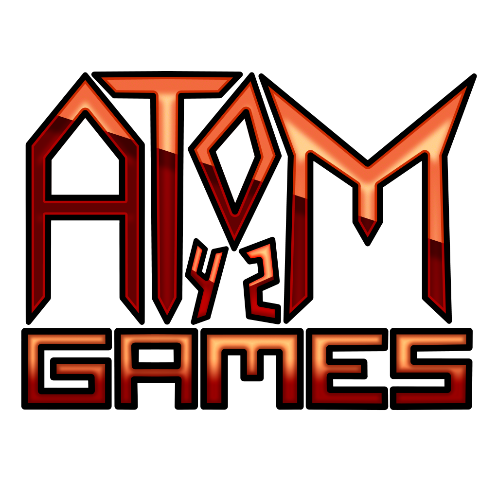

независимая студия состоящая из 1-го человека
Занимается разработкой игр в основном для мобильных устройств. Своё начало берёт ещё с 2014 года (тогда когда я начинал проникать в мир разработки игр) под названием Reicinc. Такое название существовало очень долго, а на финальной стадии его существования преобразовалось в Reysinc. С появлением ника Atom42 началось и постепенное зарождение Atom42 GAMES. Оффициальная дата создания Atom42 GAMES - 28 Апреля 2018 года. Основатель Atom42 GAMES - Atom42.
Я ещё с детства хотел создать какую-нибудь игру, но в то время у меня были практически нереализуемые мысли. Я мечтал создавать полностью бесплатные мега-реалистичные игры в которых есть отличный сюжет или полная свобода действий (в тот момент меня вдохновляли игры серии GTA и Minecraft). В 2014 я занялся поиском различных движков для создания игр. Я узнал множество движков которые на тот момент существовали и в некоторых из них я пробовал сделать очень простенькие игры (на тот момент у меня уровень знаний в этой области был практически нулевой). С того года у меня сохранилась одна игрушка, она полностью 3D-шная, в ней можно просто покататься на машинке по территории, которую ограничивает горная местность. Последующие годы я так же пробовал что-то делать, но практически всё утеряно. В один момент я занимался написанием скриптов для BlockLaucnher (Лаунчер, в котором можно устанавливать моды для Minecraft PE) было создано несколько простых скриптов (не считая пародию на WorldEdit) и 2 утерянные модификации:
1. Мод добавляющий обсидиановую броню, новые виды забора, шоколад.
2. Мод Hardcorecraft, который усложнял игру за счёт ограничения количества здоровья до 1 HP, постоянной ночи, грозы, так же в моде присутсвовала музыка.
В 2017 я начинаю делать игры и всякие приложения на Android. Первой выпущенной в этом году игрой стала "Приключения короля Швейцария" в жанре квест. Игра получилась очень короткой, упоротой и к сожалению утеряна. В меню она именовалась как "ШВЕЙЦАР", не смотря на само название игры. В ней рассказывается история из вселенной Atom42 о нападении лорда Некита на королевство Швейцария и вам предстоит своим выбором решать судьбу короля Швейцария. Спустя неделю выходит продолжение игры под названием "Приключения короля Швейцария 2" всё в том же жанре, такая же трэшовая и упоротая. После того как была утеряна первая часть она переименовалась в "Война за Королество". После переименования была добавлена возможность игры за лорда Некита. После Некита планировался ещё персонаж, которому уже игрок мог бы самостоятельно дать имя, а после сыграть за него. Эта идея не реализовалась и она перекочевала в новую игру "Смертельная битва", которая сделана всё в том же жанре квеста. Из особенностей здесь впервые появился инвентарь. Игра уже планировалась с серьёзным сюжетом, а не как трэшовая и упоротая, но к сожалению она так и осталась не законченой. В игре события происходят всё из той же вселенной Atom42, но уже во время начала третьей мировой войны. Главный герой, с тем именем которое вы ему дали, является солдатом королевства Швейцария. Вашим выбор вы решаете дальнейшую судьбу ГГ. К этому сюжету так же планировался 3D шутер, а выйдет он когда-нибудь или нет, неизвестно. Помимо этих игр разрабатывалось много других, набросочных игр и приложений, которые не получили дальнейшего развития, кроме Симулятора Жизни, который уже не совсем относится к играм раннего творчества. С моим основным творчеством вы можете ознакомиться здесь.
Хотите сыграть в игры из моего раннего творчества? К сожалению, такой возможности я не предоставляю. Возможно, она появится позже.
Изначально вселенная задумывалась в средневековом сеттинге. О таком варианте вселенной я мало что помню, но вроде бы в ней Швейцария вообще не существовало, а лорд Некит и прочие персонажи назывались иначе (Например: лорд Некит - Саевцо Барбоссо). По этой вселенной мной написано несколько упоротых рассказов, которые получились довольно смешными. Они записывались в обычную тетрадку, которая сейчас не понять где находится, возможно даже утеряна (а жаль, очень хотелось бы вспомнить то, о чём я писал).
В 2017 у меня начала зарождаться новая вселенная. В первую очередь это связано с частым использованием такого слова как "Швейцарий" в период с осени 2016 по 2017 год. Это слово у меня возникло случайно, ещё весной 2015 года. Начинаетсе вселенная в то же самое время, когда она была придумана. До 2017 она совпадает с настоящей историей, но некоторые изменения всё же присутствуют. Во вселенной существует множество новых стран, для примера: бывшая территория Украины и Беларуси - Королевство лорда Некита, Норвегия + Финляндия + Швеция + Швейцария - СКСиШ (Королевство Швейцария).
Большая часть игр выпущенная Atom42 GAMES имеет или будет иметь эту вселенную, так что все эти игры, между собой будут связаны по крайней мере наличием одной и той же вселенной. Такие игры как Flappy Switz и Swisstale являются вселенными внутри моей вселенной. Чтобы было понятнее скажу, что эти игры интерактивно рассказывают легенды/сказки про короля Швейцария из самой вселенной. Да, Swisstale - это легенда которая была придумана в качестве сказки на ночь внутри моей вселенной с целью выставить короля Швейцария лучшим (или худшим) правителем, который хочет помочь своему народу. P.S. На данный момент Swisstale как игра не существует, но есть её трэш-версия, так что если желаете узнать про Swisstale больше, можете ознакомится со Swisstale TE.
Моя вселенная имеет только начало, а конца у неё нет, она идёт вечно, я это к тому, что каждая игра про эту вселенную будет иметь разные временные отрезки и не обязательно, что это будет несколько лет, может быть разница будет и в несколько столетий.